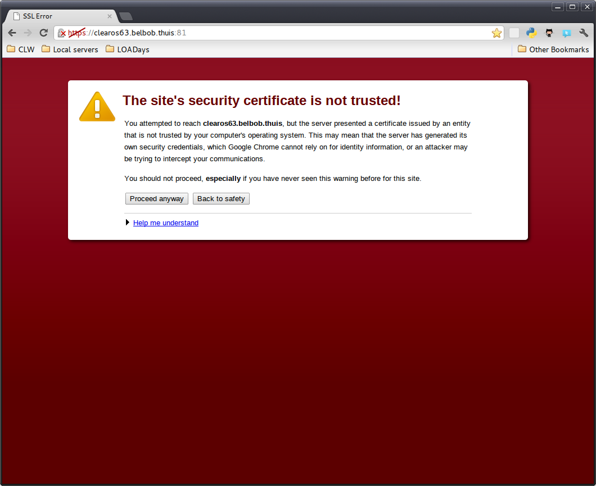

Prev
Next
Chapter 3. Installation Wizard
3.1. The sites security certificate is not trusted
After starting the install, you will be presented with a simple and short installation wizard. The wizard takes you through the basic configuration options that are required to install ClearOS.
3.1. The sites security certificate is not trusted
add certificate

Prev
2.3. Edit network settings
Up
Home
Next
Appendix A. Revision History